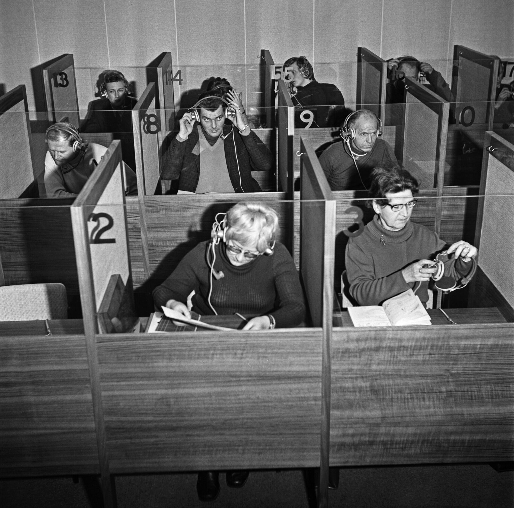
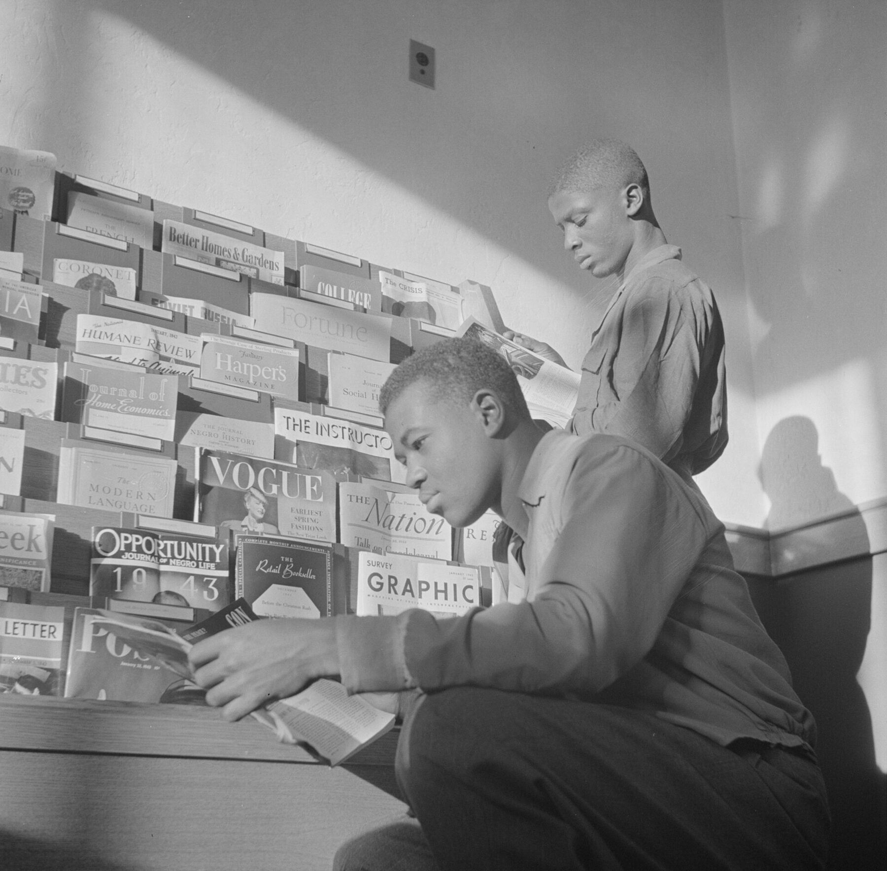
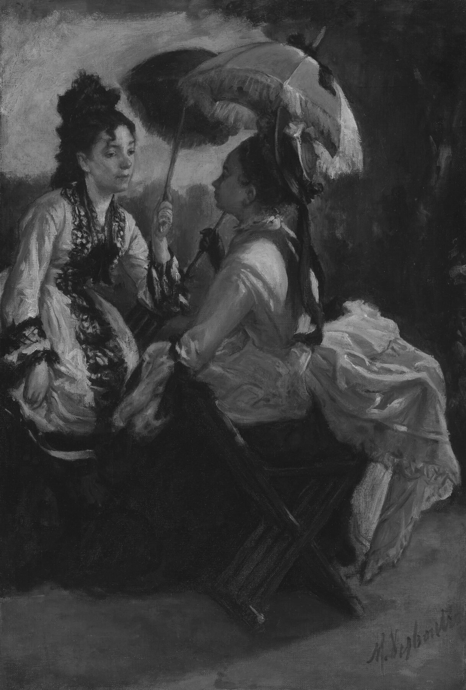
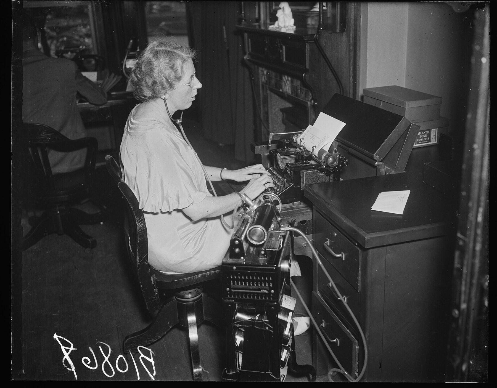
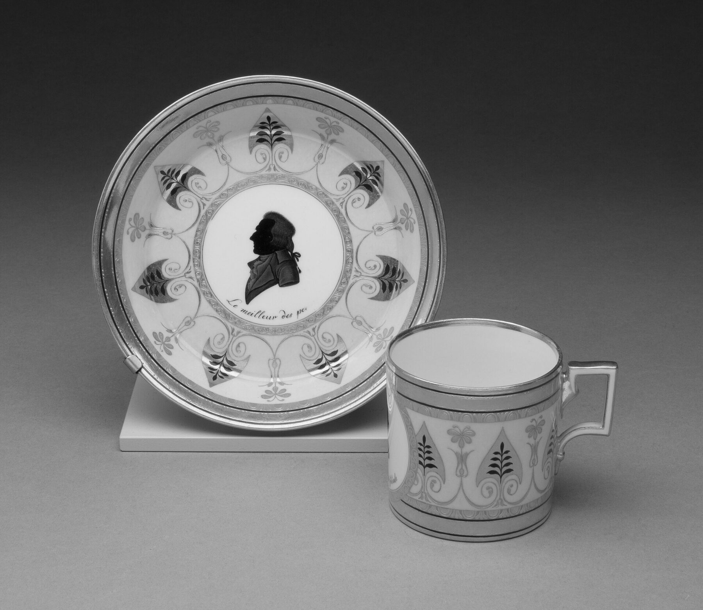
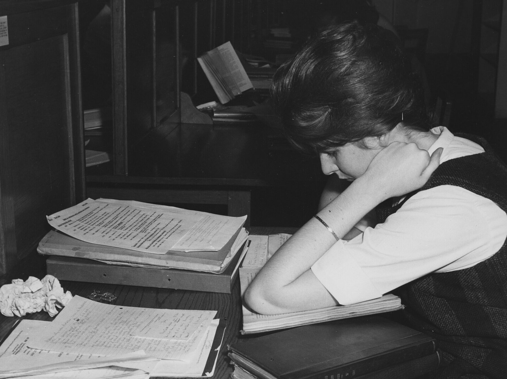
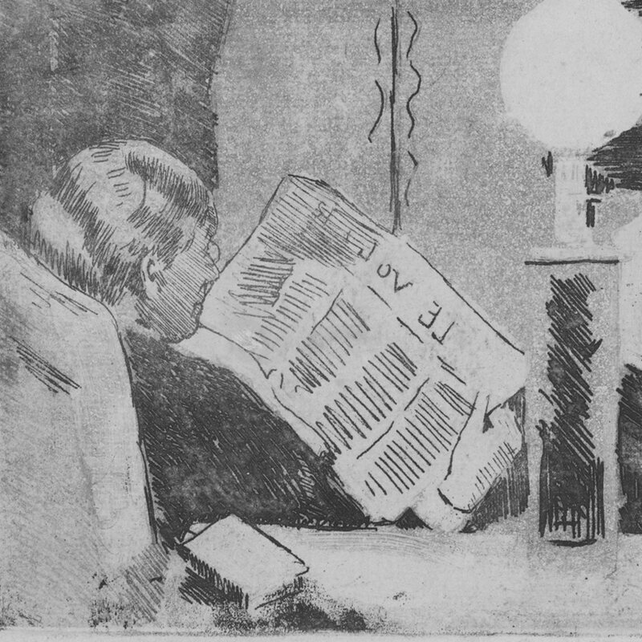

홀수 주에는 짧은 원문을 읽고 영어로 이야기하고, 짝수 주에는 실제 인터뷰를 받아쓰며 점수를 겨루는 교내 영어 스터디예요.


Read
홀수 회차 전운영진이 고른 짧은 기사·칼럼·에세이 한 편을 읽고, 인상 깊은 문장 하나를 모임 전날 밤까지 사이트에 남겨요.

Talk
홀수 회차모인 문장을 화면에 띄워 놓고, 왜 골랐는지부터 시작해 그 주제로 한 시간 동안 영어로 이야기해요.
Listen
짝수 회차인터뷰·팟캐스트·유튜브에서 고른 짧은 구간을 진행자 스피커로 두 번 들려줘요. 모두 같은 소리를 같은 때에 들어요.

Type
짝수 회차들은 문장을 휴대폰에 그대로 입력해 제출하면 바로 채점되고, 프로젝터에 띄운 랭킹이 그 자리에서 바뀌어요.
Battle

한 라운드 해 보기
영화 장면을 보고 빈칸에 들어갈 대사를 입력하세요. 실제 배틀과 같은 방식으로 점수를 매겨요.
Don’t ever let somebody you… you can’t do something.
- 정확도
- –
- 속도 보너스
- –
- 연속 정답
- –
- 라운드 점수
- – / 140
행복을 찾아서 (2006), 문장 1 / 4
짝수 회차의 Dictation Battle은 라운드마다 정확도 100점, 속도 보너스 20점, 연속 정답 보너스 20점을 더해 최대 140점이에요. 정확도는 정답 스크립트와 단어 단위로 비교하고, 대소문자와 문장부호는 보지 않아요.
속도 보너스는 정확도 80% 이상인 제출에만 붙어요. 95% 이상이면 정답으로 쳐서, 두 번 연속부터 5점씩 더 받아요. 회차 점수는 누적 랭킹에 더해지고, 화요일과 수요일 그룹의 1등에게는 커피를 한 잔씩 드려요.
매주 한 시간,둘 중 한 그룹에서

일정
| 화요일 그룹 | 정석학술정보관 스터디룸 | 17:00–18:00 |
|---|---|---|
| 수요일 그룹 | 정석학술정보관 스터디룸 | 18:30–19:30 |
| 홀수 회차 | Reading & Discussion | 원문 1편 |
| 짝수 회차 | Dictation Battle | 라운드마다 140점 |
| 참여 | 두 그룹 중 하나 | 주 1회 |
| 인원 | 소규모 | 그룹별 |
| 회비 | 없음 | 0원 |
| 공지 | 회차 페이지 | 보기 |
일정은 스케줄에 따라 바뀔 수 있어요. 바뀌면 회차 페이지에 먼저 올려요.
이런 분을 찾아요
실제 영어가 잘 안 들리는 분, 혼자 읽다 매번 그만둔 분, 영어로 말할 자리가 필요한 분.

이런 분께는 맞지 않아요
- 짧은 기간에 시험 점수를 올리려는 분
- 강의나 첨삭을 기대하는 분
- 매주 나오기 어려운 분
꾸준히 같이 하실 분만 신청해 주세요.
자주 묻는 질문
영어를 얼마나 잘해야 하나요?
사전을 찾아 가며 짧은 기사를 읽을 수 있으면 충분해요. 배틀 점수는 회차마다 더해지니, 처음에 정확도가 낮아도 꾸준히 나오면 순위가 올라가요.
화요일과 수요일은 뭐가 달라요?
시간만 달라요. 같은 주에는 두 그룹이 같은 원문과 클립을 써요. 랭킹은 전체와 그룹별로 나눠서 볼 수 있어요.
커피는 누가 받나요?
배틀이 있는 주마다 화요일 그룹 1등과 수요일 그룹 1등이 한 잔씩 받아요. 전체 1등은 랭킹에 따로 표시돼요.
원문과 클립은 누가 골라요?
운영진이 짧은 기사·칼럼·에세이와 인터뷰·팟캐스트·유튜브 구간을 골라 회차 페이지에 미리 올려요.
배틀 정답은 언제 볼 수 있어요?
모임에서는 라운드가 끝날 때마다 바로 보여 줘요. 사이트에는 수요일 모임이 끝난 뒤에 올려서, 화요일 그룹이 미리 알려 주는 일이 없게 해요.
빠지는 주가 생기면요?
미리 말해 주면 괜찮아요. 다만 꾸준히 같이 할 분을 찾는 모임이라, 자주 빠지게 되면 다음 모집 때 자리를 양보해 주세요.
Which day
어느 쪽을 눌러도 같은 신청 폼이 열려요. 폼에서 그룹을 골라 주세요.